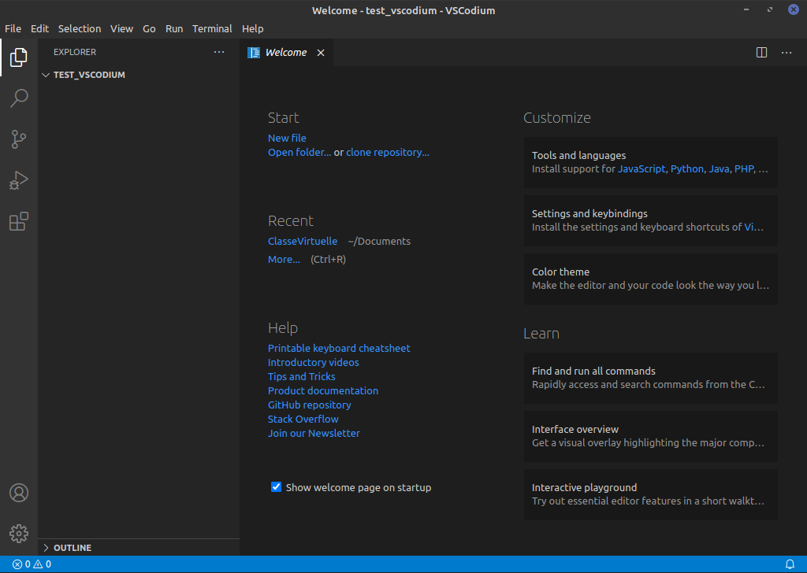

Visual Studio Code (VSCode) est un éditeur libre pour ordinateur, très complet, produit par Microsoft, mais qui inclut de la télémétrie (une sorte de mouchard). On peut certes la désactiver, mais par principe, nous ne pouvons pas recommander ces pratiques, surtout avec le risque induit par certaines extensions qui ne sont pas libres.
VSCodium est une version de VSCode sans télémétrie, et distribuée avec une licence libre (MIT) qui est bien plus respectueuse.
D'autre part, on peut ajouter des extensions ; il y a un point délicat.
Une fois installé, dans un terminal,
- pour lancer VSCodium, on entre :
codium .- Pour lancer VSCode, on aurait entré :
code .Tout comme
chromiumest la version libre dechrome.
L'aide que l'on peut trouver en ligne sur VSCode se traduit en remplaçantcodeparcodium.
VSCodium est multiplateforme, il suffit de suivre les indications proposées sur le site officiel.
Ci-dessous, une traduction rapide.
Cette section est non testée par votre professeur.
Il existe plusieurs gestionnaires de paquets pour Windows.
À partir de Windows 10 1709 (build 16299), on peut installer le App Installer
Ensuite, on peut installer VSCodium avec :
winget install vscodium
choco install vscodium
Cette section est non testée par votre professeur.
/bin/bash -c "$(curl -fsSL https://raw.githubusercontent.com/Homebrew/install/HEAD/install.sh)"
brew install --cask vscodium
wget -qO - https://gitlab.com/paulcarroty/vscodium-deb-rpm-repo/raw/master/pub.gpg | gpg --dearmor | sudo dd of=/etc/apt/trusted.gpg.d/vscodium.gpg
echo 'deb https://paulcarroty.gitlab.io/vscodium-deb-rpm-repo/debs/ vscodium main' | sudo tee --append /etc/apt/sources.list.d/vscodium.list
sudo apt update && sudo apt install codium
cd ~ mkdir test_vscodium cd test_vscodium codium .
Dans un terminal Bash,

TODO
Au premier démarrage de VSCodium, on peut aller dans le gestionnaire d'extensions avec (Ctrl+Maj+X).
Pour franciser VSCodium :
frenchFrench Language Pack for VS CodeInstallation automatique via Bash
codium --install-extension ms-ceintl.vscode-language-pack-fr
LTeXLtex: languagefr pour french.Installation automatique via Bash
codium --install-extension valentjn.vscode-ltex
Material Theme ; pour un thème sombre complet.Bracket Pair Colorizer 2 ; pour mieux voir vos parenthèses.codium --install-extension Equinusocio.vsc-material-theme codium --install-extension CoenraadS.bracket-pair-colorizer-2
Rechercher Python et installer l'extension de Microsoft. Ceci n'installe pas Python mais fera le lien entre Python déjà installé et VSCodium.
codium --install-extension ms-python.python
Une fois installée, vous pouvez tester.
test.py de type Python.print("Salut à tous !")Rechercher et installer l'extension Python Indent
codium --install-extension KevinRose.vsc-python-indent
.csv)En première, on manipule des fichiers .csv, et on peut faire aussi les toutes premières expériences de SQL.
Rechercher et installer l'extension Rainbow CSV
codium --install-extension mechatroner.rainbow-csv
En terminale, on fait une initiation au langage SQL
Rechercher et installer l'extension SQLite
Rechercher et installer l'extension ERD Editor
codium --install-extension alexcvzz.vscode-sqlite codium --install-extension dineug.vuerd-vscode
Rechercher et installer l'extension Path Autocomplete ; pour compléter automatiquement les noms de fichiers.
Pour créer des pages HTML grâce au langage Markdown, et visualiser en direct le rendu HTML.
Rechercher et installer l'extension Markdown Preview Enhanced
Pour prévisualiser en direct votre rendu HTML/JavaScript.
Il faut avoir le navigateur Chromium déjà installé.
Rechercher et installer l'extension Browser Preview
Rechercher et installer l'extension LaTeX Workshop
Pyright ; pour le typage statique, entre autres...Les extensions sont stockées dans le répertoire :
%USERPROFILE%\.vscode-oss\extensions~/.vscode-oss/extensionsIl est possible de lancer VSCodium en ligne de commande avec un autre répertoire d'extensions avec le paramètre :
--extensions-dir <dir>
Il est possible de :
.vsix,codium --install-extension myextension.vsix
Exercice :
Subtitles EditorL'extension
Asymptoteintéressera les enseignants qui dessinent avec ce logiciel.
Just follow the link.
En particulier, on y détaille les répertoires pour migrer de VSCode à VSCodium, pour ceux qui avaient commencé à utiliser VSCode avant.